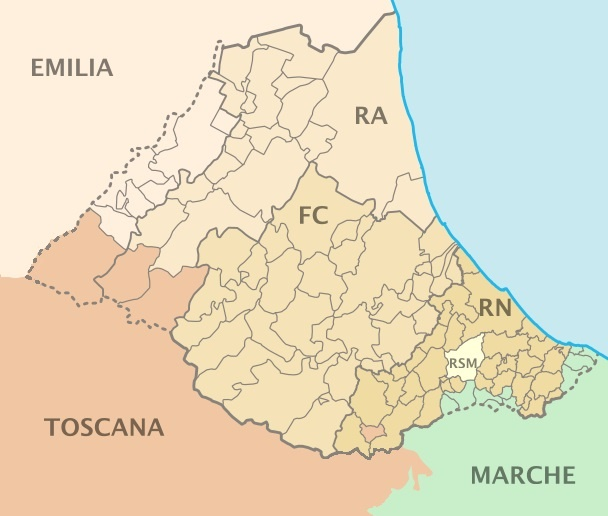

I'm a creative engineer, currently focusing on AI.

I'm always baking something new. J
🎉 Happy New Year! 🎉
I'm currently using this first space as an info display for what's coming. As of Jan 8th, 2025:
- More contents, projects and details on this website
- I'm diving a little deeper into german and exploring some frontiers technical skills
- In a few days/weeks I'll start scraping opportunities to persue my next career step
Contact me for collaboration and info!
Nov
My website
I built my personal webplace where I share projects, news, and more.
Apr
DeepFake Detection Exploiting Self-Attention Maps
Research focuses on two-step DeepFake detection: extracting Self-Attention heatmaps and training a convolutional autoencoder. The Vision Transformer (ViT), pre-trained on face recognition, captures facial features and extracts visual attention maps. These are used to train the autoencoder only on real images, enhancing out-of-distribution (OOD) detection by expecting higher reconstruction errors for manipulated images.
Tested on 5 different forgeries, the method shows an AUROC mean value of 0.60, demonstrating potential for transfer learning and generalizability among potential new forgeries.
Dec
Animal Classifier
Confusion matrix of confused animals.
Here, as a placeholder for the other projects to be shown.
Jun
Design of a two-stage reduction gearbox for general applications
The goal was to design a two-stage parallel-axis pendular gearbox. Shafts and gears were dimensioned based on key design specifications, starting with a conservative approach and refining iteratively to minimize oversizing. Bearings were selected with attention to assembly challenges, and the gearbox was completed with the most suitable mechanical components, aiming for a practical design.
In this image, you can see a section of the assembly drawing of the gearbox.
The design of one of the drive shafts
For detailed information on the initial considerations, calculations, and the complete design documentation, please refer to the attached PDF. The document is in Italian but should be straightforward to navigate.
The Team:
Latest Resume update .
Download CVA few Useful, Interesting, Inspiring Websites, People & Products
Romagna, the land I come from
Riviera Romagnola Packaging Valley, Motor Valley, Wellness Valley & Food Valley